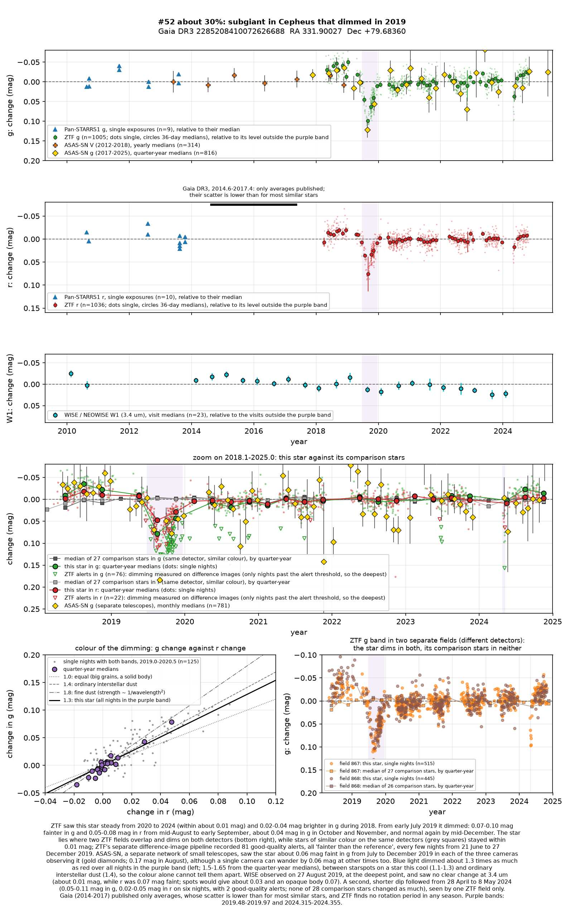
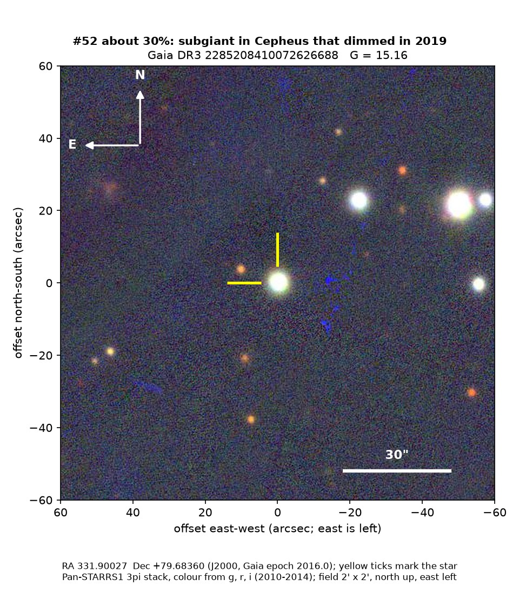
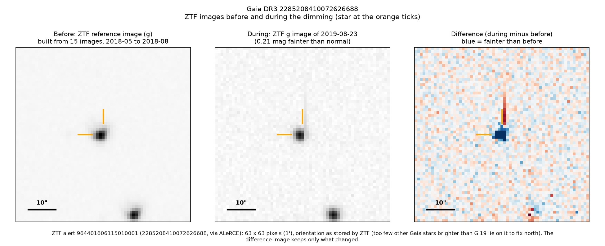
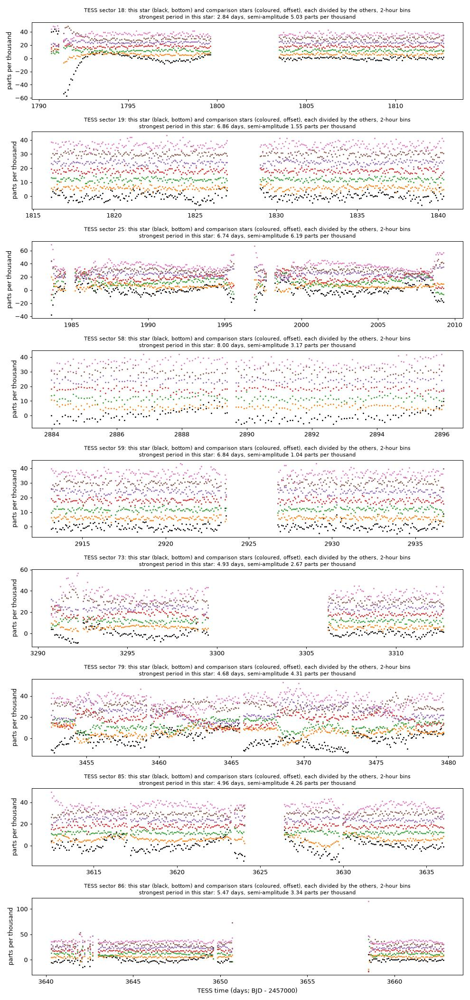

Professor of Mathematics
Paata Ivanisvili
Department of Mathematics, University of California, Irvine

Candidate 52: a subgiant that dimmed for half a year
Why this estimate. The dimming is certain: ZTF recorded it on two of its detectors and flagged it 81 times, and ASAS-SN, a separate network of small telescopes, saw it in each of its three cameras that observed the star. But green light dimmed only somewhat more than red, between starspots and ordinary dust, so the colour alone cannot tell them apart, and the star was slightly brighter in 2018 for reasons that are unclear.
How to read the pictures. The finder chart shows a patch of sky two arcminutes across, about a fifteenth of the Moon’s width, with north up and east to the left. The star sits between the two yellow ticks, and the white bar is 30 arcseconds long. On a light curve the vertical axis is magnitude, a brightness scale on which larger numbers mean fainter stars, and it is drawn so that down means fainter. Purple shading marks the dimming. Each survey uses slightly different filters, so each is compared with its own normal level. The ZTF pictures show ZTF’s reference image of the star, an image taken during the dimming, and the difference between the two, in which only what changed remains: blue means fainter and red brighter. On the TESS light curves the star is black and the comparison stars are coloured.

What changed. The star is a subgiant of about 5,400 K, some 6 billion years old, about 1,750 parsecs away in Cepheus. ZTF saw it steady from 2020 to 2024, though 0.02 to 0.04 magnitudes brighter in 2018. From early July 2019 it dimmed, by 0.07 to 0.10 magnitudes in green light and 0.05 to 0.08 in red from mid-August to early September, about 9 per cent less light, and it was normal again by mid-December. ZTF’s alert system flagged it 81 times, every few nights from June to December 2019. A second, shorter dip followed from 28 April to 8 May 2024, seen by one ZTF field only.
Why it might matter. Blue light dimmed about 1.3 to 1.65 times as much as red light, between starspots (1.1 to 1.3) and ordinary interstellar dust (1.4). WISE observed on 27 August 2019, at the deepest point, and saw only about 0.01 magnitudes of change at 3.4 microns while red light was 0.07 magnitudes faint: spots would have given about 0.03 and a solid body 0.07, so this favours dust, though only mildly. TESS shows no repeating period in any sector.
No record of the dimming could be found. The star is not in SIMBAD, VSX (the variable-star index), Gaia’s variable-star lists or the other catalogues consulted, nor among the dimming stars of Tzanidakis et al. (2025), and there is no Transient Name Server entry, Gaia alert or paper giving its Gaia number. ZTF’s alert system holds only machine-generated classifications for it.
- Star
- Gaia DR3 2285208410072626688, a subgiant
- Location
- RA 331.90027°, Dec +79.68360° (J2000), in Cepheus
- Distance
- about 1,750 parsecs (5,700 light-years)
- Brightness
- Gaia G = 15.2, far too faint for the eye
- Probability
- This candidate is unconfirmed. The percentage under the title is an estimate of the chance that it is a real, previously unrecorded case of the kind described. The estimate has not been checked by outside experts. See the introduction to all fifty-eight candidates.
- Caveat
- The colour alone cannot tell spots from dust, and the infrared favours dust only mildly. The star was slightly brighter in 2018 for reasons that are unclear, and the 2024 dip was seen on one ZTF field only. There is no spectrum.


